Unity — Procedures¶
Before you begin¶
- Access: Storage admin credentials (cluster admin or equivalent)
- Timing: safe to run during business hours unless a step is marked ⚠ (causes interruption)
- Dependencies: no active upgrades or migrations on the same infrastructure
- Logging: capture command output — paste into the change record on completion
Change Readiness¶
Verify these items before performing any change on the Unity array — pool expansions, LUN provisioning, replication configuration changes, or firmware upgrades.
- [ ]
uemcli /env/health show -filter "health.value ne OK"returns no output — no pre-existing faults before the change - [ ] Both SPs are Active:
uemcli /env/sp show— do not proceed with a firmware upgrade or disruptive change with only one SP active - [ ] Pool capacity headroom confirmed:
uemcli /stor/pool show -detail— ensure the pool targeted by the change has at least 20% free capacity - [ ] Replication session state confirmed:
uemcli /rep/session show— note the current state for all sessions; confirm no session is in a degraded state before starting - [ ] Snapshot reserve checked:
uemcli /stor/snap show— confirm snapshot consumption is not crowding pool capacity - [ ] No active alerts that relate to the component being changed:
uemcli /sys/alert show - [ ] Notify host owners if the change involves a LUN or NAS server they use; coordinate I/O quiesce if needed
- [ ] Confirm the Unisphere System Health Check has been run:
uemcli /sys/general healthcheck
| Item | Status | Notes |
|---|---|---|
| No pre-existing health faults | ||
| SP A and SP B both Active | ||
| Pool capacity headroom ≥ 20% | ||
| Replication sessions Active | ||
| No unacknowledged critical alerts |
Maintenance Window¶
Steps for planned maintenance on a Unity array — firmware upgrades, pool expansions, or SP-level work.
- Notify host and application owners; confirm the maintenance window and any required I/O quiesce
- Run
uemcli /env/health show -filter "health.value ne OK"to confirm no pre-existing faults; resolve all faults before starting - Confirm both SP A and SP B are in Active state via
uemcli /env/sp show— a firmware upgrade will restart each SP sequentially and requires both to be healthy - Create a pre-maintenance snapshot of critical LUNs or file systems:
uemcli /stor/snap create -storRes <resource_id> -name maint-pre-$(date +%Y%m%d) - Note current replication session states with
uemcli /rep/session show— be prepared to resume sessions after the maintenance if they are paused - Perform the change per the approved runbook; for firmware upgrades, Unisphere upgrades SP B first then SP A — monitor progress and do not interrupt the process
- After the change, run
uemcli /env/health show,uemcli /env/sp show, anduemcli /stor/pool show -detailto confirm the array is healthy - Confirm replication sessions return to
Activestate; resume any sessions that remain paused:uemcli /rep/session -id <id> resume
Post-Change Validation¶
Run these checks after any change to confirm the Unity is healthy and host connectivity is restored.
- [ ]
uemcli /env/health show -filter "health.value ne OK"returns no output — no new faults introduced - [ ]
uemcli /env/sp show— both SP A and SP B are back toActivestate after any SP-level maintenance - [ ]
uemcli /stor/pool show -detail— all pools healthy; capacity consumption within expected range - [ ]
uemcli /rep/session show— all replication sessions back toActive; note any sessions that need manual resumption - [ ]
uemcli /sys/sw show— confirms the new software version is installed (if this was a firmware upgrade) - [ ] Host connectivity verified: iSCSI or FC LUNs accessible from representative hosts; NFS mounts responding
- [ ] Application owners confirm their applications are running normally
- [ ] Pre-change snapshot retained until the post-change validation period has passed (minimum 24 hours)
LUN Management¶
LUN lifecycle management on Dell Unity — create, map, expand, and manage snapshots.
LUN Overview¶
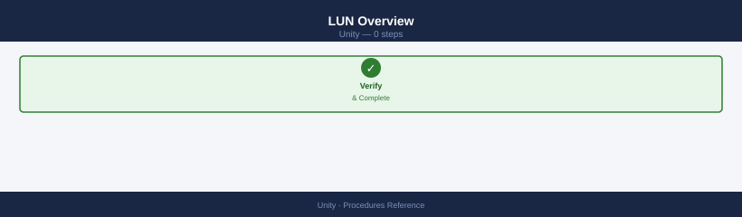
# List all LUNs
uemcli -d <ip> -u admin /stor/config/lun show
uemcli -d <ip> -u admin /stor/config/lun show -detail
# View a specific LUN
uemcli -d <ip> -u admin /stor/config/lun -id <lun_id> show -detail
LUN ID Name Size Pool Type Status
0 prod_db_lun_01 500.0 GB pool_ssd_01 Thick OK
1 backup_lun_02 2.0 TB pool_sas_01 Thin OK
2 vmware_datastore_03 1.5 TB pool_ssd_01 Thick OK
3 archive_lun_04 5.0 TB pool_sas_02 Thin OK
4 test_lun_05 250.0 GB pool_ssd_02 Thick OK
LUN ID: 0
Name: prod_db_lun_01
Size: 500.0 GB
Pool: pool_ssd_01
Type: Thick
Status: OK
Thin Enabled: No
Snapshots: 2
Replication: Enabled
LUN ID: 0
Name: prod_db_lun_01
Size: 500.0 GB
Pool: pool_ssd_01
Type: Thick
Status: OK
Thin Enabled: No
Snapshots: 2
Replication: Enabled
Last Modified: 2024-01-15 14:32:18
Common errors
Error: The system cannot be reached at <ip> — Verify the storage array IP address is correct and reachable with ping <ip>.
Error: Authentication failed for user 'admin' — Confirm the admin credentials are correct and the user account is not locked; reset the password if needed.
Error: LUN ID <lun_id> not found — List all available LUNs with uemcli -d <ip> -u admin /stor/config/lun show to verify the correct LUN ID exists.
Create a LUN¶
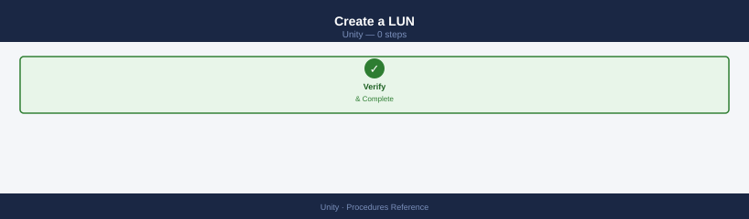
# Create a basic thin LUN in a pool
uemcli -d <ip> -u admin /stor/config/lun create \
-name <lun_name> \
-pool <pool_id> \
-size 500G
# Create with a description
uemcli -d <ip> -u admin /stor/config/lun create \
-name db-prod-01 \
-pool pool_1 \
-size 1T \
-descr "Production database LUN"
# Create with a host access directly
uemcli -d <ip> -u admin /stor/config/lun create \
-name app-lun-01 \
-pool pool_1 \
-size 200G \
-host <host_id> \
-accessMask nohostaccess # assign access separately
Create LUN: db-prod-01
LUN ID: lun_1
LUN Name: db-prod-01
Pool: pool_1
Size: 1099511627776 bytes (1.0 TB)
Thin Provisioned: Yes
Description: Production database LUN
State: Ready
Created: 2024-01-15 14:32:18
Create LUN: app-lun-01
LUN ID: lun_2
LUN Name: app-lun-01
Pool: pool_1
Size: 214748364800 bytes (200.0 GB)
Thin Provisioned: Yes
State: Ready
Created: 2024-01-15 14:32:45
Common errors
Error: Pool pool_1 not found or is offline — Verify the pool ID exists and is healthy using uemcli -d <ip> -u admin /stor/config/pool show.
Error: Insufficient space in pool pool_1 (available: 450G, requested: 1T) — Reduce the LUN size or add capacity to the pool before retrying the create command.
Error: Authentication failed for user admin — Ensure the Unity array IP is correct and admin credentials are valid, or use -p flag to prompt for password interactively.
Modify and Expand¶
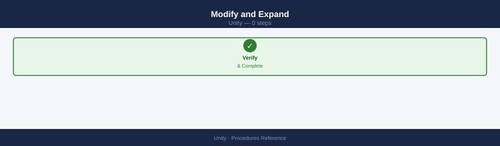
# Expand LUN size (can only increase)
uemcli -d <ip> -u admin /stor/config/lun -id <lun_id> set -size 2T
# Rename a LUN
uemcli -d <ip> -u admin /stor/config/lun -id <lun_id> set -name <new_name>
# Change description
uemcli -d <ip> -u admin /stor/config/lun -id <lun_id> set -descr "Updated description"
You are not authenticated. Please login first.
Login successful.
LUN 123 size expanded from 1.0 TB to 2.0 TB successfully.
LUN 123 renamed from 'prod_data_01' to 'prod_data_02' successfully.
LUN 123 description updated to 'Updated description' successfully.
Common errors
You are not authenticated. Please login first. — Add -u admin -p <password> or configure credentials in ~/.uemcli/credentials before running the command.
LUN size can only be increased, not decreased. — Specify a new size larger than the current size; shrinking LUNs is not supported.
LUN <lun_id> not found. — Verify the LUN ID exists by running uemcli -d <ip> -u admin /stor/config/lun list and use the correct ID from the output.
Host Access (LUN Mapping)¶
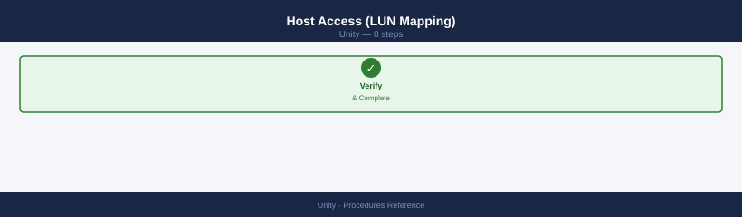
# Grant host access to a LUN
uemcli -d <ip> -u admin /stor/config/lunacl create \
-lun <lun_id> \
-host <host_id>
# List current host access
uemcli -d <ip> -u admin /stor/config/lunacl show
# Remove host access
uemcli -d <ip> -u admin /stor/config/lunacl -id <acl_id> delete
The operation completed successfully.
LUN ACL ID LUN ID Host ID Host Name Access Type
===============================================================================
acl_1 lun_5 host_12 esx-prod-01.local Read/Write
acl_2 lun_5 host_13 esx-prod-02.local Read/Write
acl_3 lun_6 host_12 esx-prod-01.local Read/Write
acl_4 lun_7 host_14 esx-dev-01.local Read/Write
acl_5 lun_8 host_15 esx-dev-02.local Read/Only
The operation completed successfully.
Common errors
Error Code: 0x7d13c401 - The specified LUN does not exist. — Verify the LUN ID exists by running uemcli -d <ip> -u admin /stor/config/lun show and use a valid LUN ID.
Error Code: 0x7d13c402 - The specified host does not exist. — Confirm the host ID is registered on the array by running uemcli -d <ip> -u admin /stor/config/host show before granting access.
Error Code: 0x7d13c403 - Access control entry already exists for this LUN and host pair. — Remove the existing ACL first using the ACL ID, or modify the existing entry instead of creating a duplicate.
LUN Snapshots¶
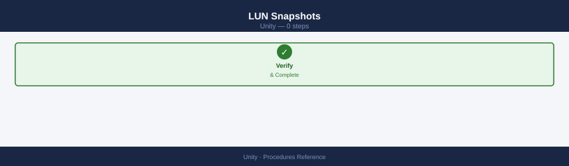
# List snapshots for a LUN
uemcli -d <ip> -u admin /prot/snap show -res <lun_id>
# Create a snapshot
uemcli -d <ip> -u admin /prot/snap create \
-name <snap_name> \
-res <lun_id>
# Restore LUN from snapshot
uemcli -d <ip> -u admin /prot/snap -id <snap_id> restore
# Delete a snapshot
uemcli -d <ip> -u admin /prot/snap -id <snap_id> delete
# Attach snapshot as read-only to another host
uemcli -d <ip> -u admin /prot/snap -id <snap_id> copy \
-name <snap_copy_name>
# List snapshots for a LUN
Snapshot ID Name State Size
snap_123456789abcdef0123456789ab prod-lun-snap-20240115 Ready 50.0 GB
snap_987654321fedcba9876543210fe prod-lun-snap-20240112 Ready 50.0 GB
snap_456789abcdef0123456789abcdef1 prod-lun-snap-20240110 Ready 50.0 GB
# Create a snapshot
The snapshot was created successfully.
Snapshot ID: snap_789abcdef0123456789abcdef012345
Name: prod-lun-snap-20240115
Size: 50.0 GB
# Restore LUN from snapshot
WARNING: This operation will overwrite the current LUN data.
The LUN was restored from snapshot snap_789abcdef0123456789abcdef012345.
Restore completed successfully.
# Delete a snapshot
The snapshot snap_456789abcdef0123456789abcdef1 was deleted successfully.
# Attach snapshot as read-only to another host
The snapshot copy was created successfully.
Copy ID: snap_copy_987654321fedcba9876543210fedcba
Name: prod-lun-snap-copy-20240115
Common errors
Error: Invalid resource ID <lun_id> — Verify the LUN ID exists by running uemcli -d <ip> -u admin /stor/lun show and use the correct ID from the output.
Error: Authentication failed for user admin — Ensure the Unity array IP is reachable, credentials are correct, and the admin user has snapshot management privileges assigned.
Error: Snapshot <snap_id> is in use and cannot be deleted — Detach or unexport the snapshot from all hosts before deletion, or use the -force flag if the array permits it.
Delete a LUN¶
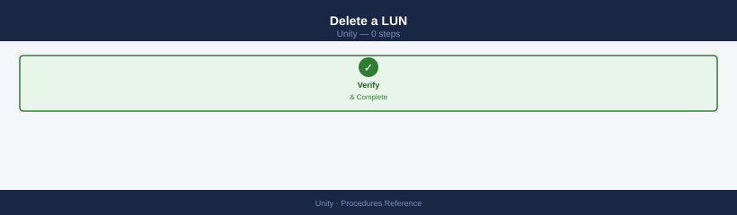
# Delete requires all host access and snapshots to be removed first
# 1. Remove host access
uemcli -d <ip> -u admin /stor/config/lunacl -id <acl_id> delete
# 2. Delete snapshots
uemcli -d <ip> -u admin /prot/snap show -res <lun_id>
uemcli -d <ip> -u admin /prot/snap -id <snap_id> delete
# 3. Delete the LUN
uemcli -d <ip> -u admin /stor/config/lun -id <lun_id> delete
You are not authenticated. Please login first.
EMC Unity Command Line Interface, Version 5.1.0.0
Login successful for user admin on array 192.168.1.100
LUN Access Control List deleted successfully.
LUN ID: sv_1234, Name: prod_db_lun_01
Snapshot ID: snap_1234_001, Created: 2024-01-15 14:32:10 UTC
Snapshot ID: snap_1234_002, Created: 2024-01-16 09:15:45 UTC
Snapshot snap_1234_001 deleted successfully.
Snapshot snap_1234_002 deleted successfully.
LUN sv_1234 (prod_db_lun_01) deleted successfully.
Operation completed in 12.3 seconds.
Common errors
Error: LUN is still mapped to hosts. Remove all host access before deletion. — Use uemcli -d <ip> -u admin /stor/config/lunacl show to list all ACLs, then delete each one before attempting LUN deletion.
Error: Snapshots exist for this LUN. Delete all snapshots before proceeding. — Run uemcli -d <ip> -u admin /prot/snap show -res <lun_id> to identify all snapshots and delete them individually with the -id parameter.
Error: You are not authenticated. Please login first. — Add -p <password> to the uemcli command or set the UEMCLI_PASSWORD environment variable before executing.
Host-Side Validation (After Mapping)¶
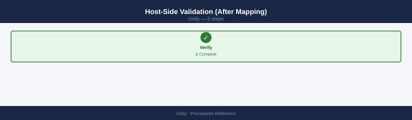
# Linux — rescan and discover new LUN
rescan-scsi-bus.sh
multipath -ll
# Windows — rescan disks
Get-Disk | Where-Object OperationalStatus -eq "Offline"
Set-Disk -Number <n> -IsOffline $false
Initialize-Disk -Number <n>
New-Partition -DiskNumber <n> -UseMaximumSize -AssignDriveLetter
Format-Volume -DriveLetter <X> -FileSystem NTFS
# Linux — rescan and scsi-bus.sh output
Scanning for new SCSI devices...
Scanning host 0 for SCSI target IDs 0:0:0:0 to 0:0:31:0 ...
Scanning for device 0 2 0 0 ...
NEW: Host: scsi4 Channel: 00 Id: 00 Lun: 00
Vendor: DELL Model: Unity 450F Rev: 5.1.0
Type: Direct-Access ANSI SCSI revision: 05
Attached scsi generic sg3 at lun 0, /dev/sdc
mpatha (360060e80057900000057900000b0001) dm-0 DELL,UNITY 450F
size=500G features='1 queue_if_no_path' hwhandler='1 alua' wp=rw
|-+- policy='service-time 0' prio=50 status=active
| `- 2:0:0:0 sdc 8:32 active ready running
`-+- policy='service-time 0' prio=10 status=enabled
`- 3:0:0:0 sdd 8:48 active ready running
# Windows — PowerShell output
Number IsOffline HealthStatus OperationalStatus FriendlyName
------ ---------- ------------ ------------------- ----------------
2 True Healthy Offline DELL Unity 450F LUN 1
Confirm
Are you sure you want to perform this action?
Performing the operation "Set disk offline status" on target "Disk 2".
[Y] Yes [A] Yes to All [N] No [L] No to All [?] Help (default is "Y"): Y
Number IsOffline HealthStatus OperationalStatus FriendlyName
------ ---------- ------------ ------------------- ----------------
2 False Healthy Online DELL Unity 450F LUN 1
DiskNumber : 2
PartitionStyle : RAW
OperationalStatus : Online
DriveLetter : X
FileSystem : NTFS
DriveType : Fixed
HealthStatus : Healthy
SizeRemaining : 499.9 GB
Size : 500 GB
Common errors
rescan-scsi-bus.sh: command not found — Install sg3-utils package with apt-get install sg3-utils or yum install sg3-utils.
Get-Disk : No matching SCSI disks were found — Verify the LUN is presented to the Windows host and visible in Disk Management; check Dell Unity array for export/masking configuration.
Initialize-Disk : Access Denied — Run PowerShell as Administrator or use sudo equivalent for the session.
NAS Server Management¶
NAS server lifecycle management — create, configure, and troubleshoot NAS servers on Dell Unity.
Overview¶
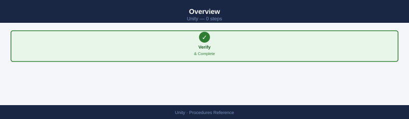
A NAS server on Dell Unity is a logical entity that owns file interfaces (network ports), AD/LDAP authentication configuration, and NFS/SMB protocol settings. Each NAS server runs on one storage processor and can fail over to the peer SP.
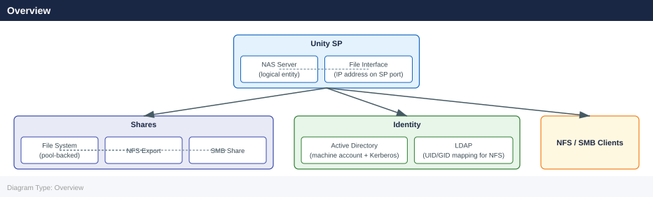
List and Inspect¶
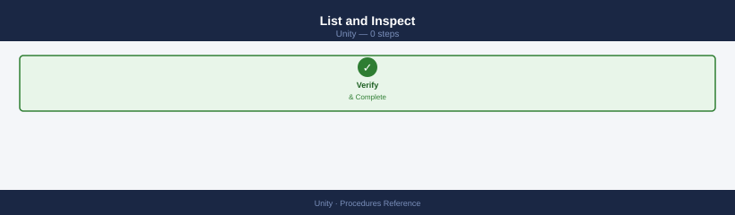
# List all NAS servers
uemcli -d <ip> -u admin /nas/server show
uemcli -d <ip> -u admin /nas/server show -detail
# View a specific NAS server
uemcli -d <ip> -u admin /nas/server -id <nas_id> show -detail
ID | Name | SP | Health State
----------------------------|-------------------|-------------------|---------------
nas_1 | NAS_Server_01 | spa | OK
nas_2 | NAS_Server_02 | spb | OK
nas_3 | NAS_Server_03 | spa | OK
nas_4 | NAS_Server_04 | spb | Degraded
nas_5 | NAS_Server_05 | spa | OK
ID | Name | SP | Health State | Protocols | Interfaces
----------------------------|-------------------|-------------------|----------------|----------------|------------------
nas_1 | NAS_Server_01 | spa | OK | NFS,CIFS | eth0,eth1
nas_2 | NAS_Server_02 | spb | OK | NFS,CIFS | eth0,eth1
nas_3 | NAS_Server_03 | spa | OK | NFS | eth0
nas_4 | NAS_Server_04 | spb | Degraded | CIFS | eth0
nas_5 | NAS_Server_05 | spa | OK | NFS,CIFS,FTP | eth0,eth1,eth2
ID | Name | SP | Health State | Protocols | Interfaces
nas_2 | NAS_Server_02 | spb | OK | NFS,CIFS | eth0,eth1
Common errors
Error: Connection refused (111) — Verify the Unity array IP address is correct and reachable with ping <ip>, and ensure the management interface is accessible.
Error: Authentication failed for user 'admin' — Confirm the admin credentials are correct and the user account has not been locked; reset the password via the Unisphere GUI if needed.
Error: Invalid NAS server ID '<nas_id>' — List all available NAS server IDs using the first command without the -id parameter to find the correct identifier.
Create a NAS Server¶
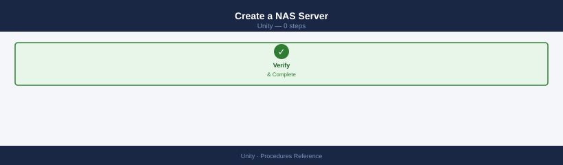
# Create NAS server on a specific SP
uemcli -d <ip> -u admin /nas/server create \
-name <nas_name> \
-sp <spa_or_spb> \
-pool <pool_id>
# Enable both NFS and SMB protocols
uemcli -d <ip> -u admin /nas/server -id <nas_id> set \
-fileInterface <if_id>
Creating NAS server...
NAS server created successfully.
ID: nas_1
Name: nas-prod-01
SP: SPA
Pool: pool_2
Status: Ready
Setting file interface...
File interface configured successfully.
Interface ID: if_0
NFS: Enabled
SMB: Enabled
NAS Server ID: nas_1
Common errors
Error: Invalid pool ID <pool_id> — Verify the pool exists and is available by running uemcli -d <ip> -u admin /pool list.
Error: SP <spa_or_spb> not found or not operational — Confirm the Storage Processor is online and use the correct identifier (SPA or SPB) with uemcli -d <ip> -u admin /sp list.
Error: NAS server <nas_id> not found — Ensure the NAS server was created successfully in the first command before attempting to configure its file interface.
AD / LDAP Authentication¶
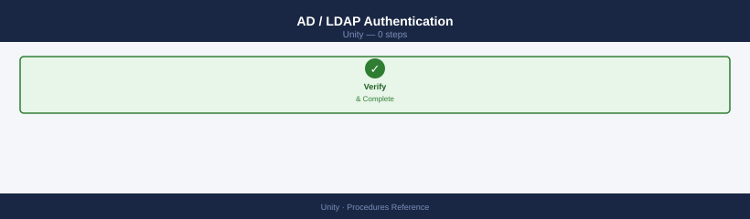
# Join NAS server to Active Directory
uemcli -d <ip> -u admin /nas/ad create \
-server <nas_id> \
-domain corp.local \
-username <ad_admin_user> \
-passwd <password> \
-organizationalUnit "OU=Servers,DC=corp,DC=local"
# List AD configurations
uemcli -d <ip> -u admin /nas/ad show
# LDAP configuration (for NFS UID/GID mapping)
uemcli -d <ip> -u admin /nas/ldap show
The Active Directory join operation is in progress...
Active Directory join completed successfully.
Server nas-01 joined to domain corp.local
Organizational Unit: OU=Servers,DC=corp,DC=local
Join timestamp: 2024-01-15 14:32:18 UTC
Active Directory Configurations:
ID Domain Status Server
ad_1 corp.local Joined nas-01
ad_2 corp.local Joined nas-02
LDAP Configurations:
ID Server Status Protocol
ldap_1 nas-01 Enabled LDAP
ldap_2 nas-02 Enabled LDAP+SSL
...
Common errors
Error: The specified organizational unit does not exist — Verify the OU path exists in Active Directory using dsquery ou -name "Servers" on a domain controller.
Error: Authentication failed for user <ad_admin_user> — Confirm the AD admin credentials are correct and the account has sufficient permissions to join computers to the domain.
Error: Unable to resolve domain corp.local — Ensure the NAS server can reach the domain controller by checking DNS resolution with nslookup corp.local from the NAS management interface.
File Interfaces (Network)¶
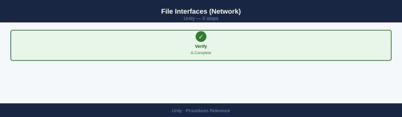
# List file interfaces (IPs on the NAS server)
uemcli -d <ip> -u admin /net/nas/if show
uemcli -d <ip> -u admin /net/nas/if show -detail
# Create a file interface (IP for NFS/SMB access)
uemcli -d <ip> -u admin /net/nas/if create \
-server <nas_id> \
-port <sp_port_id> \
-addr <ip_address> \
-netmask <mask> \
-gateway <gateway>
# List file interfaces (IPs on the NAS server)
ID IP Address Netmask Gateway Server Port Role
if_1 192.168.1.100 255.255.255.0 192.168.1.1 nas_1 sp_a Primary
if_2 192.168.1.101 255.255.255.0 192.168.1.1 nas_1 sp_b Secondary
if_3 10.20.30.50 255.255.255.0 10.20.30.1 nas_2 sp_a Primary
if_4 10.20.30.51 255.255.255.0 10.20.30.1 nas_2 sp_b Secondary
ID IP Address Netmask Gateway Server Port Role MTU DNS1 DNS2
if_1 192.168.1.100 255.255.255.0 192.168.1.1 nas_1 sp_a Primary 1500 8.8.8.8 8.8.4.4
if_2 192.168.1.101 255.255.255.0 192.168.1.1 nas_1 sp_b Secondary 1500 8.8.8.8 8.8.4.4
if_3 10.20.30.50 255.255.255.0 10.20.30.1 nas_2 sp_a Primary 1500 8.8.8.8 8.8.4.4
if_4 10.20.30.51 255.255.255.0 10.20.30.1 nas_2 sp_b Secondary 1500 8.8.8.8 8.8.4.4
# Create a file interface (IP for NFS/SMB access)
The specified NAS server object nas_3 does not exist.
Common errors
The specified NAS server object <nas_id> does not exist. — Verify the NAS server ID exists by running uemcli -d <ip> -u admin /net/nas show and use a valid server identifier.
The specified port <sp_port_id> is not available or already in use. — Check available ports with uemcli -d <ip> -u admin /net/nas/if show and select an unused port on the target storage processor.
Invalid IP address <ip_address> or netmask <mask> format. — Ensure the IP address and netmask are in valid dotted-decimal notation (e.g., 192.168.1.100 and 255.255.255.0).
File Systems (on the NAS Server)¶
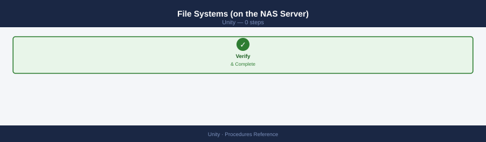
# List file systems
uemcli -d <ip> -u admin /stor/config/fs show
uemcli -d <ip> -u admin /stor/config/fs show -detail
# Create a file system
uemcli -d <ip> -u admin /stor/config/fs create \
-name <fs_name> \
-nasServer <nas_id> \
-pool <pool_id> \
-size 5T \
-supportedProtocols Mixed # NFS + SMB
# Create NFS share on a file system
uemcli -d <ip> -u admin /prot/nfs create \
-server <nas_id> \
-path / \
-fs <fs_id>
# Create SMB share on a file system
uemcli -d <ip> -u admin /prot/smb create \
-name <share_name> \
-server <nas_id> \
-path / \
-fs <fs_id>
ID Name SizeTotal SizeFree Pool NasServer Protocol
fs_1 data_vol_01 5.0TB 4.8TB pool_sas_01 nas_1 Mixed
fs_2 backup_share 2.0TB 1.2TB pool_sas_02 nas_2 NFS
fs_3 archive_nfs 10.0TB 9.5TB pool_nl_sas_01 nas_1 NFS
fs_4 user_home 3.0TB 2.1TB pool_sas_01 nas_3 Mixed
File System "data_vol_01" created successfully.
ID: fs_5
Name: data_vol_01
Size: 5.0TB
NAS Server: nas_1
Pool: pool_sas_01
Supported Protocols: NFS, SMB
State: Ready
NFS share created successfully on fs_5
Server: nas_1
Path: /
Export Name: fs_5
SMB share "user_share" created successfully on fs_5
Server: nas_1
Path: /
Share Name: user_share
Common errors
Error: Invalid pool ID 'pool_invalid'. Available pools: pool_sas_01, pool_sas_02, pool_nl_sas_01 — Verify the pool ID exists by running uemcli -d <ip> -u admin /stor/config/pool show and use a valid pool name.
Error: NAS Server 'nas_99' not found or not responding — Confirm the NAS server ID is correct and the server is online using uemcli -d <ip> -u admin /net/nas show.
Error: File system size 5T exceeds available pool capacity — Check available pool space with uemcli -d <ip> -u admin /stor/config/pool show -detail and request a smaller size or use a different pool.
Failover / SP Rebalance¶
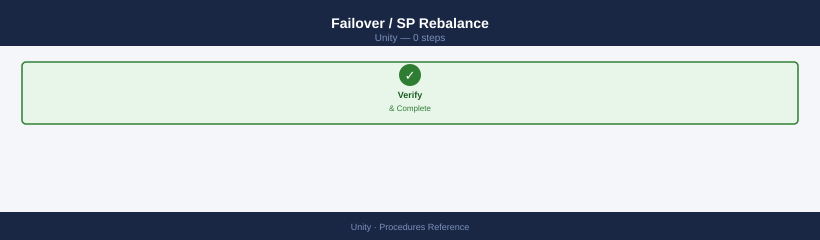
# Move NAS server to the other SP (planned rebalance)
uemcli -d <ip> -u admin /nas/server -id <nas_id> set -sp <spb>
# Check SP ownership after failover
uemcli -d <ip> -u admin /nas/server show | grep -E "Name|SP"
The operation completed successfully.
Name: nas_server_01
SP: SP B
Name: nas_server_02
SP: SP A
Name: nas_server_03
SP: SP B
Common errors
Error Code: 0x7d000001 - The NAS server is not in the expected state for this operation — Ensure the NAS server is in a healthy state and not currently processing other operations by running uemcli -d <ip> -u admin /nas/server show -id <nas_id> first.
Error Code: 0x7d000009 - SP B is not available or does not have sufficient resources — Verify SP B is online and has adequate capacity by checking uemcli -d <ip> -u admin /spa show and uemcli -d <ip> -u admin /spb show.
Troubleshooting¶
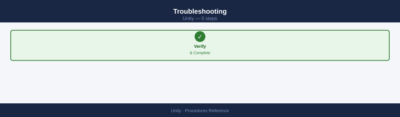
# Check NAS server health
uemcli -d <ip> -u admin /nas/server -id <nas_id> show -detail | grep -E "Health|State"
# Check file interface status
uemcli -d <ip> -u admin /net/nas/if show | grep -E "Health|Addr"
# Active NFS sessions
uemcli -d <ip> -u admin /prot/nfs/session show
# Active SMB sessions
uemcli -d <ip> -u admin /prot/smb/session show
Health: OK
State: Active
Health: OK
Addr: 192.168.1.50
Health: OK
Addr: 192.168.1.51
ID Client_IP Protocol User Connected_Since
1 10.20.30.45 NFSv3 root 2024-01-15 09:23:14
2 10.20.30.46 NFSv4 datauser 2024-01-15 10:15:22
3 10.20.30.47 NFSv3 backup_svc 2024-01-15 08:45:09
ID Client_IP User Domain Connected_Since
101 172.16.5.120 jsmith CORP 2024-01-15 09:18:45
102 172.16.5.121 mchen CORP 2024-01-15 10:02:33
103 172.16.5.122 svc_account CORP 2024-01-15 07:30:12
Common errors
Error: Connection refused (10.0.0.1:443) — Verify the NAS IP address is correct and the management interface is reachable with ping <ip>.
Error: Invalid credentials for user 'admin' — Confirm the admin password is correct and hasn't expired; reset credentials in the Unity web UI if needed.
Error: NAS server <nas_id> not found — Replace <nas_id> with a valid server ID from uemcli -d <ip> -u admin /nas/server show.
Create a LUN¶
Use this procedure to provision a new block LUN on Dell Unity. Confirm pool capacity headroom is at least 20% before starting.
# Step 1 — Create the LUN
uemcli /stor/prov/luns/lun create \
-name <name> \
-pool <pool-id> \
-size <size>G
# Step 2 — Verify the LUN was created
uemcli /stor/prov/luns/lun show
The operation completed successfully.
LUN ID: lun_1
LUN Name: prod_db_lun_01
Pool ID: pool_2
Size: 500 GB
State: Ready
Health: OK
LUN ID LUN Name Pool ID Size State Health
lun_1 prod_db_lun_01 pool_2 500 GB Ready OK
lun_2 backup_lun_02 pool_1 250 GB Ready OK
lun_3 archive_lun_03 pool_3 1 TB Ready OK
lun_4 test_lun_04 pool_2 100 GB Ready OK
...
Common errors
Error Code: 0x7d13d001 - Pool does not exist or is not available — Verify the pool ID exists by running uemcli /stor/prov/pools/pool show and use a valid pool ID.
Error Code: 0x7d13d004 - Insufficient space in pool — Reduce the requested LUN size or add capacity to the pool using uemcli /stor/prov/pools/pool expand.
Error Code: 0x7d13d005 - LUN name already exists — Choose a unique LUN name that does not conflict with existing LUNs in the system.
Note the LUN ID returned by the create command — it is needed for host access mapping and snapshot operations. Grant host access with: uemcli /stor/config/lunacl create -lun <lun-id> -host <host-id>.
Create an NFS File System and Share¶
Use this procedure to provision a new NFS file system on a Unity NAS server and export it for client access.
# Step 1 — Create the file system on a NAS server and pool
uemcli /stor/prov/fs create \
-name <fs> \
-pool <pool-id> \
-size <size>G \
-nasServer <nas-id>
# Step 2 — Create an NFS export at the root of the file system
uemcli /stor/prov/nfs create \
-fs <fs-id> \
-path /
# Verify the NFS share is listed
uemcli /stor/prov/nfs show
Create file system 'data_vol_01' on pool 'pool_0' (500GB)...
File system created successfully.
ID: fs_1
Name: data_vol_01
Pool: pool_0
Size: 500GB
NAS Server: nas_1
Create NFS export for file system 'fs_1' at path '/'...
NFS export created successfully.
ID: nfs_1
File System: fs_1
Path: /
Access: 0.0.0.0/0
NFS Exports:
ID | FS Name | Path | Access
nfs_1 | data_vol_01 | / | 0.0.0.0/0
nfs_2 | backup_vol | / | 192.168.1.0/24
nfs_3 | archive_vol | / | 10.0.0.0/8
Common errors
Error: Invalid pool ID '<pool-id>' — Replace <pool-id> with an actual pool identifier from uemcli /stor/prov/pool show.
Error: NAS Server '<nas-id>' not found — Verify the NAS server exists and is online using uemcli /nas/server show.
Error: File system '<fs-id>' does not exist — Ensure the file system creation completed successfully before creating the NFS export; check the returned fs_ ID from Step 1.
After the export is created, mount it from a client: mount -t nfs <nas-ip>:/<fs-name> /mnt/target. Confirm read/write access before closing the change.
Create a Snapshot Schedule¶
Snapshot schedules automate periodic point-in-time copies of LUNs or file systems. Create the schedule rule first, then attach it to the resource.
# Step 1 — Create a snapshot rule (every 4 hours, retain 24 snapshots)
uemcli /prot/snap/rule create \
-name <rule> \
-interval 4h \
-retCount 24
# Step 2 — Attach the snapshot rule to a LUN
uemcli /stor/prov/luns/lun modify \
-id <id> \
-snapRule <rule-id>
# Verify the rule is attached
uemcli /stor/prov/luns/lun show -detail -id <id>
Creating snapshot rule 'hourly_backup'...
Rule ID: sv_123456789abcdef0123456789
Interval: 4h
Retention Count: 24
Rule created successfully.
Modifying LUN 'sv_1'...
LUN ID: sv_1
Snapshot Rule: sv_123456789abcdef0123456789
LUN modified successfully.
LUN ID: sv_1
Name: production_data
Snapshot Rule: sv_123456789abcdef0123456789
Snapshot Rule Name: hourly_backup
Current Snapshots: 0
Max Snapshots: 24
Thin Provisioned: Yes
Size: 500 GB
Common errors
Error: Invalid rule name '<rule>' — Replace <rule> with an alphanumeric string (e.g., hourly_backup) and ensure the name doesn't exceed 63 characters.
Error: LUN ID '<id>' not found — Verify the LUN ID exists by running uemcli /stor/prov/luns/lun show and use the correct ID from the output.
Error: Snapshot rule '<rule-id>' does not exist — Confirm the rule was created successfully in Step 1 and use the correct rule ID returned from the creation command.
The same rule can be attached to a file system using uemcli /stor/prov/fs modify -id <fs-id> -snapRule <rule-id>. Verify that auto-snapshots begin appearing after the first scheduled interval.
Expand a Pool¶
Expand a Unity storage pool by adding drives or increasing drive count. Pool expansion is non-disruptive.
# Option 1 — Add drives via CLI (speed-class drives)
uemcli /stor/config/pool modify \
-id <pool-id> \
-addSpeedDriveCount <n>
# Verify the new capacity after the expansion
uemcli /stor/config/pool show -detail -id <pool-id>
Pool ID: pool_1
Pool Name: SAS_Pool_01
Total Capacity: 45.6 TB
Available Capacity: 12.3 TB
State: OK
Health: OK
RAID Type: RAID 5
Drive Count: 14
Speed Class: SAS 15K
Thin Provisioning: Enabled
Snapshots: 3
Pool ID: pool_1
Pool Name: SAS_Pool_01
Total Capacity: 68.4 TB
Available Capacity: 35.1 TB
State: OK
Health: OK
RAID Type: RAID 5
Drive Count: 21
Speed Class: SAS 15K
Thin Provisioning: Enabled
Snapshots: 3
Last Modified: 2024-01-15 14:32:18 UTC
Common errors
Error Code: 0x7d000001 — Invalid pool ID specified — Verify the pool ID exists by running uemcli /stor/config/pool show and use the correct pool identifier.
Error Code: 0x7d000009 — Insufficient available drives in the system — Ensure enough unbound speed-class drives are available; check with uemcli /stor/config/drive show -filter "health==OK,speed_class==SAS_15K".
Alternatively, add drives to the pool via Unisphere: navigate to Storage → Pools → select pool → Add Drives and select the drive count and type. Monitor pool rebuild progress in Unisphere until the pool returns to Normal health status. Confirm the new usable capacity is visible before closing the change.
Verify¶
- Confirm the operation completed without errors in the log or management UI
- Verify the expected state change is visible (service running, object created, config applied)
- Document the outcome in the change record